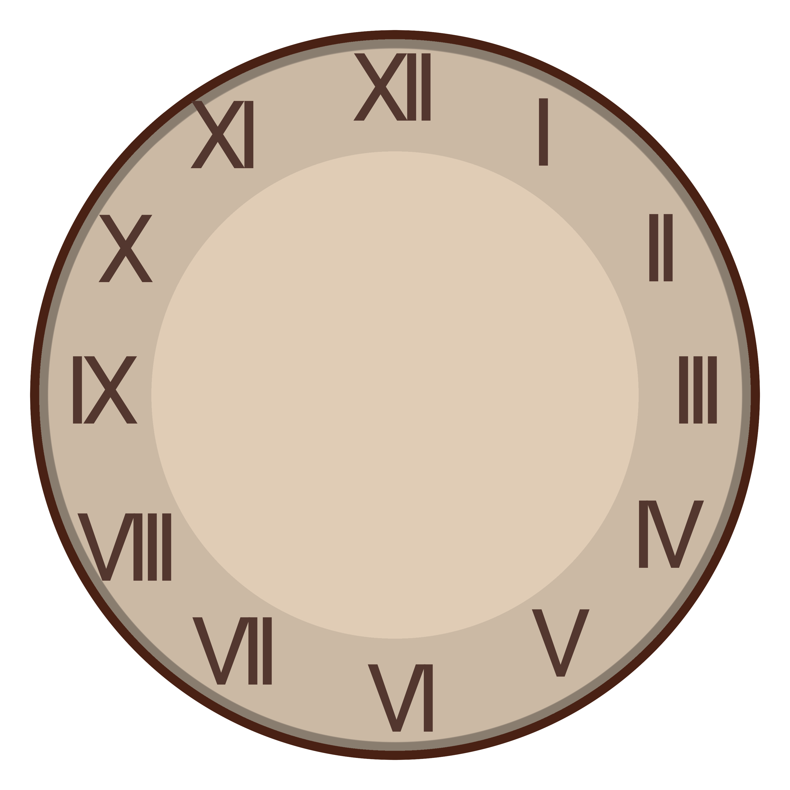
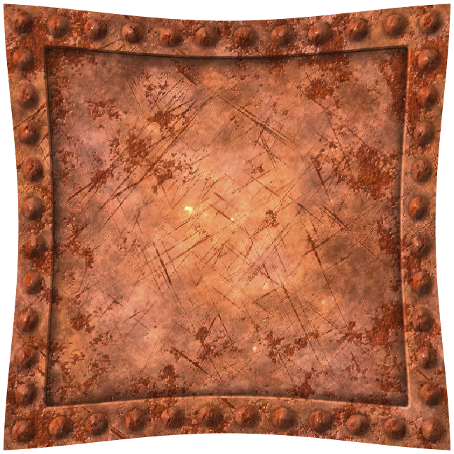
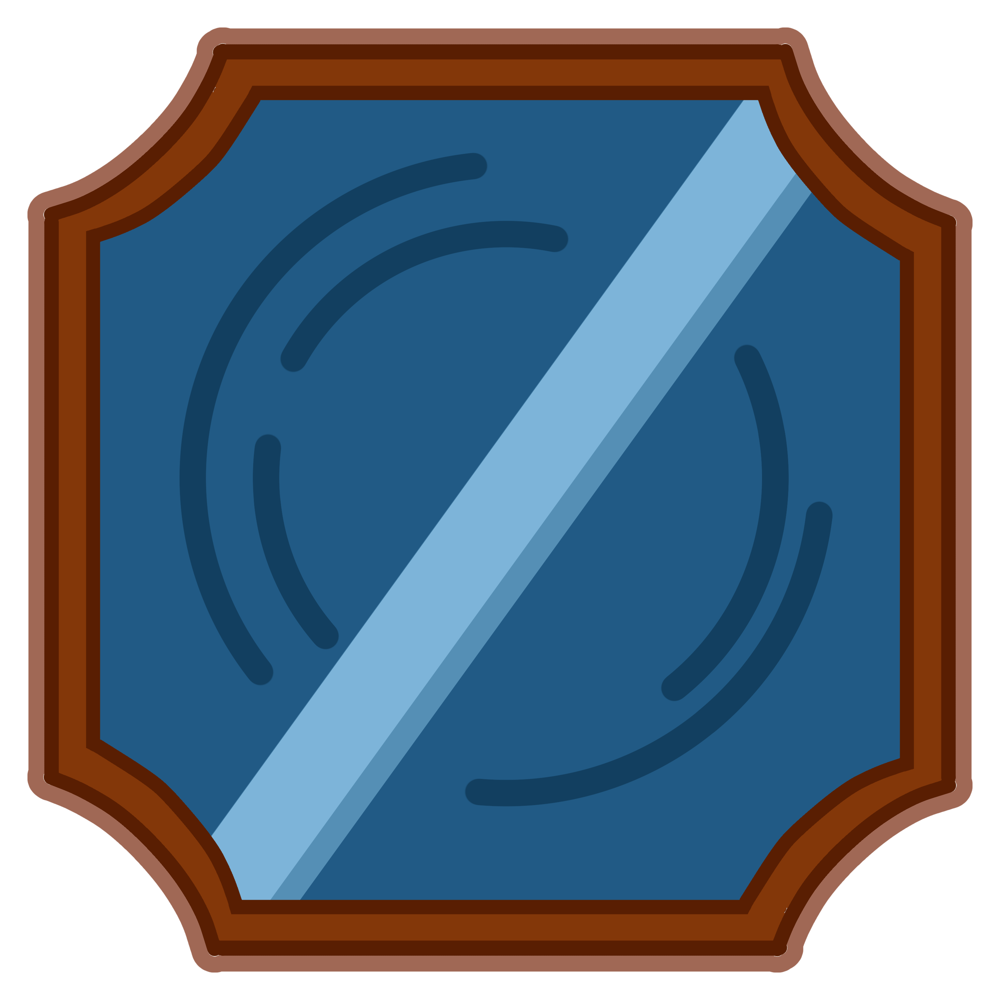
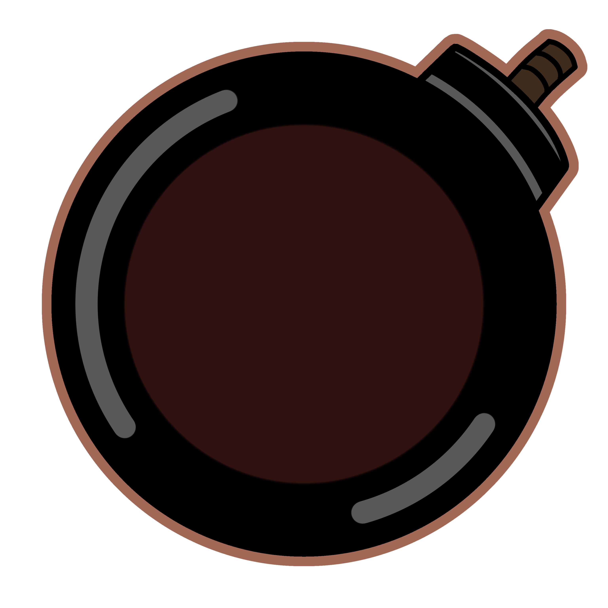
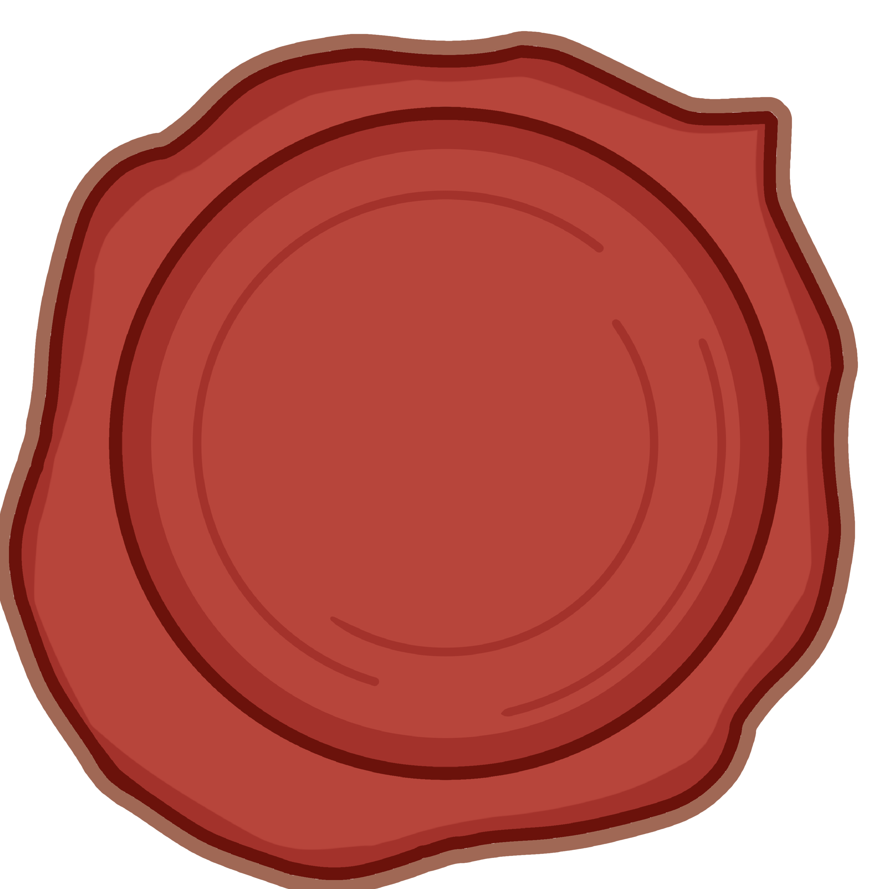

Правила гри Вапорталіс:
Кількість гравців:
2–4 особи.
Мета:
Першим дійти до фіналу — центрального сектору №100, викинувши на кубику точну кількість очок.
Старт і рух:
Гра починається з двох стартових позицій (на вибір гравців або за домовленістю). Гравці ходять по черзі. У свій хід гравець кидає 1 кубик і пересуває свою фішку на відповідну кількість секторів уперед.
Особливі сектори на полі:
Сектор «Годинник» (Звичайна вікторина):
    
«Великий сектор» (Серйозне випробування):
Сектор «Портал»:
Сектор «Бомба»:
Пропуск ходу:
Фінал гри:
Фінал гри складається з двох кіл по 12 секторів, у центрі яких розташований головний переможний сектор №100. Правило точного кидка: Щоб перейти з кіл на рівень вище або дістатися фінішу (сектору №100), потрібно викинути абсолютно точну кількість ходів, якої бракує до центру. Перебір ходів: Якщо за результатами кидка кубика у вас випадає більше очок, ніж потрібно, ваша фішка не зупиняється на фініші, а змушена знову йти по колу, доки наступного разу вам не випаде точна кількість.